Electrochemical Interface & Conversion Lab
DISCOVERING
INTERFACES
AS THEY EVOLVE.
Led by Dr. Weiran Zheng, we use multimodal operando methods to study how electrodes evolve under working conditions and to connect electrochemical signals with structural and other characterization signals. Water electrolysis and electrochemical ammonia oxidation are two applications of this approach.
Using data-driven analysis, we aim to understand electrode degradation mechanisms, develop methods to predict electrode lifetime under defined conditions, and guide improvements in electrode stability.
